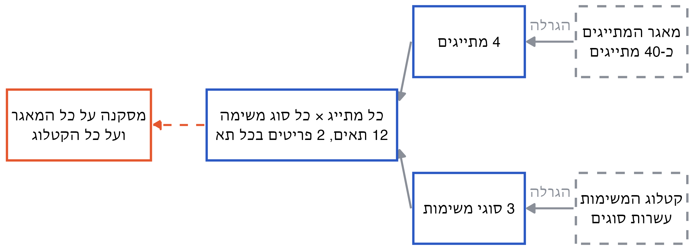
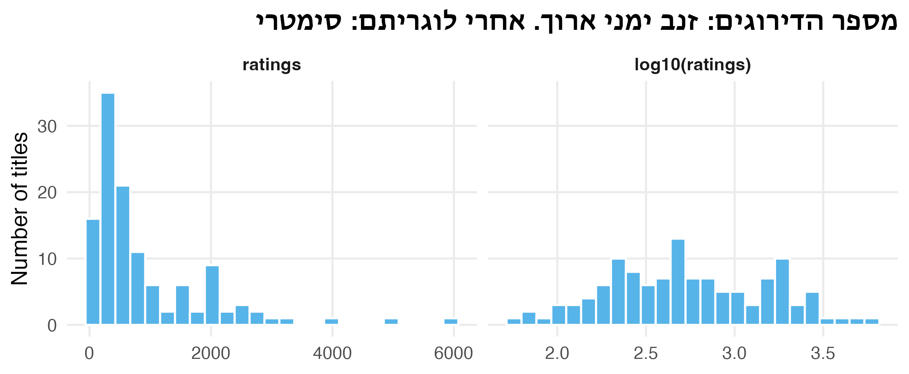

תרגיל מסכם מקצה לקצה: איך לתמחר ספרי שמע לפי סוגה. כל מה שלמדנו עד עכשיו, בשאלה אחת בסגנון הבחינה
תכנון זמנים משוער: חזרה 5 דק׳, השלמת הדו-כיווני 80, הפסקה, תרגיל מסכם 60. אם הזמן לא מספיק, האפקטים האקראיים והמודל ההיררכי יכולים להיות בקצב מהיר (הם מופיעים במלואם בדף הסיכום), אבל כדאי לא לקצר את התרגיל המסכם. אם נשאר זמן, עוברים למצגת של הרצאה 8 (רגרסיה לוגיסטית).
חזרה: איפה עצרנו
ניתוח דו-כיווני: השאלה
צוות ה-AI במוקד בונה בוט שעונה ללקוחות. שתי החלטות פתוחות:
גודל המודל (פקטור A): קטן, בינוני או גדול. גדול מדויק יותר, אבל יקר
RAG (פקטור B): לשלוף מסמכי מדיניות ולהכניס אותם לפרומפט, או לא
הניסוי: כל אחד מ-\(3 \times 2 = 6\) השילובים רץ 4 פעמים על סט הערכה. התגובה: אחוז התשובות הנכונות. ניסוי עם כל השילובים נקרא ניסוי עצרתי (factorial design).
אפקט ראשי (main effect): ההשפעה של פקטור אחד, בממוצע על פני הרמות של השני
אינטראקציה (interaction): ההשפעה של פקטור אחד תלויה ברמה של השני
# A tibble: 6 × 6
size retrieval `run 1` `run 2` `run 3` `run 4`
<fct> <fct> <dbl> <dbl> <dbl> <dbl>
1 small off 62.3 59.2 58.2 61.6
2 small on 76.3 77.1 78.1 78.8
3 medium off 73.7 74.8 68.6 70.3
4 medium on 76.3 82.5 85.7 79.7
5 large off 85.2 85.2 83.4 80.8
6 large on 82.7 79.4 91.5 80.9
הנתונים בתרשים
הקווים לא מקבילים: נראה שיש אינטראקציה. עכשיו נבנה את המודל ונבדוק אותה בצורה פורמלית
ניתוח שונות דו-כיווני: המודל והמבחנים
סימון
פקטור A עם \(a\) רמות (גודל המודל, \(a = 3\)), פקטור B עם \(b\) רמות (RAG, \(b = 2\)), \(n\) חזרות בכל תא (\(n = 4\)). \(N = abn = 24\).
\(B_1\)
\(\cdots\)
\(B_b\)
סכום
\(A_1\)
\(y_{111}, \dots, y_{11n}\)
\(\cdots\)
\(y_{1b1}, \dots, y_{1bn}\)
\(y_{1\cdot\cdot}\)
\(\vdots\)
\(y_{ij\cdot}\)
\(A_a\)
\(y_{a11}, \dots, y_{a1n}\)
\(\cdots\)
\(y_{ab1}, \dots, y_{abn}\)
\(y_{a\cdot\cdot}\)
סכום
\(y_{\cdot 1\cdot}\)
\(\cdots\)
\(y_{\cdot b\cdot}\)
\(y_{\cdot\cdot\cdot}\)
\(y_{ijk}\): התצפית ה-\(k\) ברמה \(i\) של A וברמה \(j\) של B. נקודה במקום אינדקס = סכום על האינדקס הזה:
\(SS_{\text{cells}}\) הוא ה-\(SS_{Tr}\) של הניתוח הזה: כל מה שמבדיל בין התאים. מה שנשאר הוא הפיזור בתוך התאים, ולכן \(SS_E = SS_T - SS_{\text{cells}}\).
צעד 2: למה התאים שונים זה מזה? יש שלוש סיבות אפשריות: הגודל (A), ה-RAG (B), או הצירוף הספציפי של שניהם (AB). זה אותו פירוק כמו בשקף “פירוק השונות”, בלי השגיאה:
צעד 3: האינטראקציה היא מה שנשאר. אם אין אינטראקציה, כל ממוצע תא הוא בדיוק “ממוצע כללי + אפקט שורה + אפקט עמודה”, והקווים בתרשים מקבילים. \(SS_{AB}\) מודד כמה התאים רחוקים מהתחזית האדיטיבית הזו.
האינטראקציה במספרים
Size
RAG
Actual mean
Additive prediction
Gap (interaction)
small
off
60.3
64.5
-4.2
small
on
77.6
73.4
4.2
medium
off
71.8
72.0
-0.2
medium
on
81.0
80.9
0.2
large
off
83.7
79.2
4.4
large
on
83.6
88.0
-4.4
התחזית האדיטיבית היא \(\bar y_{i\cdot\cdot} + \bar y_{\cdot j\cdot} - \bar y_{\cdot\cdot\cdot}\). זה מה שהיינו מצפים לו אם RAG היה מוסיף אותו דבר לכל גודל
הפער הוא \(\widehat{(\tau\beta)}_{ij}\). למודל הקטן RAG עוזר יותר מהממוצע (פער חיובי עם RAG), ולגדול פחות (פער שלילי)
\(SS_{AB} = n \sum_{i,j} (\text{gap}_{ij})^2 = 4 \cdot 74.72 = 298.9\). אותו מספר שיוצא מ-\(SS_{\text{cells}} - SS_A - SS_B\) בחישוב הידני
זהירות עם עיגול.\(C\) ו-\(\sum y^2\) הם מספרים גדולים, וההפרש ביניהם קטן יחסית. אם מעגלים אותם מוקדם מדי, \(SS_T\) יוצא שגוי. בבחינה שומרים כמה שיותר ספרות עד ההחסרה האחרונה.
size:retrieval היא שורת האינטראקציה. \(F_0 = 14.21\), \(p < 0.001\): יש אינטראקציה
גם שני האפקטים הראשיים מובהקים, אבל בגלל האינטראקציה הם לא מספרים את כל הסיפור
\(MS_E = 10.52\), ולכן \(\hat\sigma = 3.24\) נקודות אחוז: הרעש בין ריצות על מדגמי שאלות שונים
* מול + בנוסחה.acc ~ size + retrieval הוא המודל האדיטיבי, בלי אינטראקציה. במודל כזה ה-\(SS_{AB}\) וה-\(SS_E\) מתאחדים לשגיאה אחת עם \((a-1)(b-1) + ab(n-1)\) דרגות חופש. מסירים את האינטראקציה רק אם יש סיבה טובה, למשל כשהיא בבירור לא מובהקת וקטנה, או כשאין חזרות (בהמשך).
# A tibble: 6 × 6
size retrieval cell tau beta tau_beta
<fct> <fct> <dbl> <dbl> <dbl> <dbl>
1 small off 60.3 -7.4 -4.4 -4.22
2 small on 77.6 -7.4 4.4 4.22
3 medium off 71.8 0.1 -4.4 -0.2
4 medium on 81.0 0.1 4.4 0.2
5 large off 83.6 7.29 -4.4 4.42
6 large on 83.6 7.29 4.4 -4.42
עם RAG, המודל הקטן מרוויח יותר ממה שהמודל האדיטיבי צופה, והגדול פחות. לכן האינטראקציה של קטן עם RAG חיובית, \(\widehat{(\tau\beta)}_{small,\,on} > 0\), ושל גדול עם RAG שלילית, \(\widehat{(\tau\beta)}_{large,\,on} < 0\)
כשהאינטראקציה מובהקת: אפקטים פשוטים
אפקט פשוט (simple effect): האפקט של RAG בכל גודל מודל בנפרד. כל השוואה משתמשת ב-\(MS_E\) של המודל המלא:
size = small:
contrast estimate SE df t.ratio p.value
on - off 17.250 2.29 18 7.523 <0.0001
size = medium:
contrast estimate SE df t.ratio p.value
on - off 9.200 2.29 18 4.012 0.0008
size = large:
contrast estimate SE df t.ratio p.value
on - off -0.025 2.29 18 -0.011 0.9914
קטן: RAG מוסיף כ-17 נקודות. בינוני: כ-9. גדול: 0
SE זהה בשלושתם: \(\sqrt{2 \cdot 10.52 / 4} = 2.29\)
ומה עם מודל קטן עם RAG מול מודל גדול?
השאלה העסקית: האם מודל קטן עם RAG, הזול יותר, יכול להחליף את המודל הגדול? זו השוואה בין תאים, לא בין רמות של פקטור. לכן מתייחסים ל-6 התאים כאילו היו 6 קבוצות בניתוח חד-כיווני, ומריצים עליהם Tukey. הסף אחיד לכל 15 הזוגות:
כל הפרש בין שני תאים שגדול מ-7.29 מובהק. קטן ממנו: לא מובהק
להדגיש את שני השינויים לעומת Tukey החד-כיווני: מספר הממוצעים הוא 6 (התאים), ודרגות החופש הן של השגיאה במודל הדו-כיווני (18), לא N − 6 שמגיעים אליו במקרה לאותו מספר כאן. ה-HSD של 7.29 הוא “הסרגל” שנראה בתרשים הבא.
small:on-large:off: הקטן עם RAG מפגר אחרי הגדול בלי RAG בכ-6 נקודות. \(6.08 < HSD = 7.29\), ולכן ההפרש לא מובהק (\(p = 0.14\))
אבל “לא מובהק” אינו “שווה”. רווח הסמך המשותף: מ-13 נקודות לטובת הגדול ועד נקודה אחת לטובת הקטן. ייתכן שהפער אפסי, וייתכן שהוא 13 נקודות
ההמלצה: RAG לכל מודל קטן או בינוני. לפני שמחליפים את הגדול בקטן עם RAG, צריך ניסוי ממוקד עם יותר ריצות. עכשיו אפשר לחשב כמה (ניתוח עוצמה, הרצאה 4)
זה הרגע להזכיר את מלכודת “לא מובהק ≠ שווה” מהרצאה 4. אם המנהל רוצה לדעת אם הקטן עם RAG “מספיק טוב”, צריך להגדיר מראש פער מקסימלי סביר (למשל 2 נקודות) ולתכנן ניסוי שרווח הסמך שלו צר מזה.
בדיקת ההנחות
אותן הנחות כמו בחד-כיווני, ואותם כלים. השאריות: \(e_{ijk} = y_{ijk} - \bar y_{ij\cdot}\)
הנקודות ב-Q-Q קרובות לקו. הפיזור דומה ברוב התאים. Bartlett על 6 התאים: \(p = 0.18\)
עם 4 תצפיות לתא, אי אפשר לראות הרבה. זה המצב הרגיל בניסויים, ולכן תכנון טוב (הגרלה, ריצות עצמאיות) חשוב מאוד
בלוקים: ניתוח דו-כיווני בלי חזרות
חזרה למוקד: אפקט היום
בהרצאה 4 ראינו שבימים 6 ו-8 הטיפול היה קצר בכל המודלים. כל יום הפעלנו את כל חמשת המודלים, על פניות אחרות.
היום הוא פקטור שני. הוא לא מעניין אותנו כשלעצמו, אבל הוא מוסיף רעש. פקטור כזה נקרא בלוק (block)
בכל תא יש תצפית אחת (\(n = 1\)): מודל אחד ביום אחד
המודל עם בלוק
\[
y_{ij} = \mu + \tau_i + \beta_j + \varepsilon_{ij} \qquad i = 1, \dots, a \text{ (מודל)}, \quad j = 1, \dots, b \text{ (יום)}
\]
אין איבר אינטראקציה. עם \(n = 1\) אין פיזור בתוך תא, ולכן אי אפשר להפריד אינטראקציה משגיאה. מניחים שהמודל אדיטיבי: יום עמוס מאריך את הטיפול בכל המודלים באותה מידה
למה לא בודקים את הבלוק? את הבלוק הכנסנו כי ידענו מראש שימים שונים זה מזה. לא שאלנו “האם יש הבדל בין ימים”. R מדפיס \(F\) גם לבלוק, וזה מראה אם הוא עזר, אבל זו לא השאלה של הניסוי. ניסוי כזה, שבו כל הטיפולים מופיעים בכל בלוק בסדר אקראי, נקרא ניסוי בבלוקים מוגרלים (randomized complete block design, RCBD). נרחיב עליו בהרצאה על תכנון ניסויים.
התוצאה: בלי בלוק ועם בלוק
קוד
summary(aov(aht ~ model, data = calls_d))
Df Sum Sq Mean Sq F value Pr(>F)
model 4 18.0 4.51 5.28 0.0016 **
Residuals 40 34.1 0.85
---
Signif. codes: 0 '***' 0.001 '**' 0.01 '*' 0.05 '.' 0.1 ' ' 1
קוד
summary(aov(aht ~ model + day, data = calls_d))
Df Sum Sq Mean Sq F value Pr(>F)
model 4 18.0 4.51 17.4 1.1e-07 ***
day 8 25.9 3.23 12.5 6.6e-08 ***
Residuals 32 8.3 0.26
---
Signif. codes: 0 '***' 0.001 '**' 0.01 '*' 0.05 '.' 0.1 ' ' 1
\(SS_{model} = 18.02\)לא השתנה. מה שהשתנה: \(25.9\) מתוך \(34.1\) של השגיאה הם בעצם הבדלים בין ימים
\(MS_E\) ירד מ-0.854 ל-0.259, ו-\(F\) של המודלים קפץ מ-5.3 ל-17.4
המחיר: הבלוק לוקח 8 דרגות חופש מהשגיאה (40 → 32). \(MS_E = SS_E / df_E\), ולכן אם הבלוק לא היה מסביר כלום, היינו מחלקים כמעט אותו \(SS_E\) במספר קטן יותר, ו-\(MS_E\) היה עולה. כאן הבלוק הוריד את \(SS_E\) פי 4, ולכן המחיר זניח
למה דרגות חופש הן מחיר? כל פרמטר שמוסיפים למודל נאמד מהנתונים, וכל אחד כזה משתמש בתצפית אחת שכבר לא זמינה לאמידת השונות. יש לזה שתי השלכות. ראשית, \(MS_E = SS_E/df_E\): בלוק חסר תועלת מוריד את \(SS_E\) רק במקצת, אבל מקטין את המכנה, ולכן \(MS_E\) עולה ו-\(F\) של הטיפול יורד. שנית, עם פחות דרגות חופש הסף עולה: \(F_{0.95;\,4,\,40} = 2.61\) מול \(F_{0.95;\,4,\,32} = 2.67\). כאן ההפרש בסף קטן, וההפחתה ב-\(SS_E\) (מ-34.1 ל-8.3) גדולה בהרבה, ולכן הבלוק משתלם מאוד. הכלל המעשי: מכניסים בלוק כשיש סיבה מראש לחשוב שהוא משנה (ימים, משמרות, מכונות), לא ליתר ביטחון.
ההשלכה על ההשוואות המרובות. עם \(MS_E = 0.259\), \(s_{\bar y} = \sqrt{0.259/9} = 0.17\), ו-HSD קטן בהרבה. ההשוואות של M1 מול M3, M4 ו-M5, שלא היו מובהקות ב-Tukey בלי הבלוק, מובהקות עכשיו (\(p < 0.002\)), ו-M2 מול M1 נשאר לא מובהק. התוצאה: אותן שתי קבוצות ש-Duncan מצא. בדקו בעצמכם: TukeyHSD(aov(aht ~ model + day, data = calls_d), "model"). הבלוק נתן לשיטה השמרנית את העוצמה שחסרה לה.
אפקטים אקראיים בניתוח דו-כיווני
השאלה: מתייגים וסוגי משימות
צוות ה-AI משלם למתייגים (annotators) לתייג נתוני אימון. כמה זמן לוקח לתייג פריט, ומאיפה מגיעה השונות?

מתייגים: במאגר יש כ-40. מגרילים 4
סוגי משימות: בקטלוג יש עשרות סוגים (סיווג כוונה, זיהוי ישויות, דירוג תשובות…). מגרילים 3
כל מתייג מתייג 2 פריטים מכל סוג משימה. התגובה: שניות לפריט
האינטואיציה: אם המתייגים שהוגרלו מגיבים אחרת לכל סוג משימה, הממוצעים שלהם “קופצים” גם בלי הבדל אמיתי ביניהם. הרעש הזה נכנס ל-\(MS_A\), ולכן צריך להשוות אותו לרעש של האינטראקציה ולא רק לרעש בתוך תא
R לא יודע שהפקטורים אקראיים, אלא אם אומרים לו. הוא מחלק הכול ב-\(MS_E\), ולכן ה-\(F\) של המתייגים ושל סוגי המשימות בפלט הזה שגוי. בשקף הבא נראה איך אומרים ל-R.
התיקון הידני (כמו בבחינה): מחלקים את \(MS_A\) ואת \(MS_B\) ב-\(MS_{AB}\), ומחשבים את רכיבי השונות מתוחלות ה-MS:
קוד
ms <-summary(fit_ann)[[1]][["Mean Sq"]]; dfs <-summary(fit_ann)[[1]][["Df"]] # A, B, AB, EF_A <- ms[1] / ms[3]; F_B <- ms[2] / ms[3]rbind(annotator =c(F = F_A, p =pf(F_A, dfs[1], dfs[3], lower.tail =FALSE)),task =c(F = F_B, p =pf(F_B, dfs[2], dfs[3], lower.tail =FALSE)))
F p
annotator 5.58 3.596e-02
task 163.83 5.815e-06
Error() אומר ל-R מול איזה איבר אקראי לבדוק את האפקטים:
קוד
summary(aov(sec ~ annotator + task +Error(annotator:task), data = annot))
Error: annotator:task
Df Sum Sq Mean Sq F value Pr(>F)
annotator 3 169 56 5.58 0.036 *
task 2 3315 1658 163.83 5.8e-06 ***
Residuals 6 61 10
---
Signif. codes: 0 '***' 0.001 '**' 0.01 '*' 0.05 '.' 0.1 ' ' 1
Error: Within
Df Sum Sq Mean Sq F value Pr(>F)
Residuals 12 51.7 4.31
הפלט מחולק לשכבות (strata). בשכבה annotator:task, השורה Residuals היא \(MS_{AB}\), ושני האפקטים נבדקים מולה
\(F_A = MS_A / MS_{AB} = 5.58\) עם \((3, 6)\) דרגות חופש. זה המכנה הנכון. בשכבה Within, השורה Residuals היא \(MS_E\)
למה annotator ו-task לא בתוך Error()? כי Error() לא מצהיר מי אקראי. הוא קובע מול מה בודקים את מה שכתוב מחוצה לו. אם נכתוב Error(annotator * task), כל פקטור יקבל שכבה משלו, בלי מבחן \(F\) בכלל
את רכיבי השונות מחשבים מתוחלות ה-MS, לפי הנוסחאות בשקף על האומדים
הדרך המודרנית. כדי להצהיר שכל האיברים אקראיים משתמשים במודל מעורב, למשל בחבילה lme4: lmer(sec ~ 1 + (1 | annotator) + (1 | task) + (1 | annotator:task), data = annot). הוא אומד את רכיבי השונות ישירות (בשיטת REML), ובניסוי מאוזן הוא נותן את אותם אומדים כמו הנוסחאות מתוחלות ה-MS, כל עוד הם חיוביים. בקורס הזה מספיק aov() עם Error().
R מדפיס אזהרה “Error() model is singular”. היא לא מזיקה כאן (כי A ו-B מופיעים גם כאפקטים וגם בתוך האיבר האקראי), אבל כדאי להזהיר את הסטודנטים שיראו אותה. בבחינה עדיין צריך לדעת לחשב ידנית מטבלת ANOVA.
מודל מעורב (mixed model): פקטור אחד קבוע ואחד אקראי. למשל, 3 ממשקי תיוג שאנחנו רוצים להשוות (קבוע), ו-4 מתייגים שהוגרלו (אקראי). אז \(E(MS_A) = \sigma^2 + n\sigma_{\tau\beta}^2 + \frac{bn\sum\tau_i^2}{a-1}\) לפקטור הקבוע A, ולכן את הפקטור הקבוע בודקים מול \(MS_{AB}\), ואת האינטראקציה מול \(MS_E\). לגבי הפקטור האקראי יש שתי גרסאות של המודל בספרות (מוגבל ולא מוגבל), שנותנות מכנה שונה, \(MS_E\) או \(MS_{AB}\). בקורס הזה מספיק לזכור את הכלל הכללי: בוחרים מכנה שהתוחלת שלו שווה לתוחלת המונה תחת \(H_0\).
חישוב רכיבי השונות
הרעיון: כל \(E(MS)\) הוא סכום של רכיבי שונות. מחסירים שני MS שההפרש ביניהם הוא רכיב אחד בלבד, ומחלקים במקדם שלו. למשל:
סך הכול:\(4.31 + 2.91 + 7.72 + 205.95 = 220.9\). החלק של כל רכיב הוא הרכיב חלקי הסכום, למשל סוגי משימות: \(205.95 / 220.9 = 93\%\)
אומד שלילי? אם \(MS_A < MS_{AB}\) יוצא אומד שלילי. שונות לא יכולה להיות שלילית, ולכן מדווחים 0
איך קוראים את התוצאה
בלי Error(): מול MSE (שגוי)
מקור
F
p
מתייגים
13.1
0.00043
סוגי משימות
384.7
< 0.0001
עם Error(): מול MSAB (נכון)
מקור
F
p
מתייגים
5.6
0.036
סוגי משימות
163.8
< 0.0001
רכיבי שונות (מהשקף הקודם)
רכיב
שונות
חלק
סוגי משימות
206.0
93%
מתייגים
7.7
3%
אינטראקציה
2.9
1%
שגיאה
4.3
2%
מתייגים: עם המכנה הנכון ה-p-value גדול פי 84, כי \(MS_{AB}\) גדול פי 2.3 מ-\(MS_E\), ויש רק 6 דרגות חופש במכנה. כאן זה עדיין מובהק, אבל עם פחות נתונים המסקנה הייתה יכולה להתהפך
סוגי משימות: כ-93% מהשונות. ההחלטה: לתמחר תיוג לפי סוג משימה, לא מחיר אחיד לפריט. מתייגים: רק כ-3%
זהירות: את \(\sigma_\beta^2\) אומדים מ-3 סוגי משימות בלבד, ולכן האומד מאוד לא מדויק. כדי לאמוד אותו טוב צריך יותר סוגי משימות, לא יותר פריטים
מודל היררכי (Nested)
מצטלב מול היררכי
מצטלב (crossed): כל רמה של \(A\) מופיעה עם כל רמה של \(B\). כל מתייג תייג כל סוג משימה.
היררכי (nested): כל רמה של \(B\) קיימת רק בתוך רמה אחת של \(A\). במקרה כזה אומרים ש-\(B\) מקונן ב-\(A\), ומסמנים \(B(A)\).
הדוגמה: שלושה מרכזי נתונים (ישראל, אירופה, ארה״ב). בכל אחד מגרילים 4 שרתים, ושולחים לכל שרת 3 בקשות.
מרכז נתונים
ישראל
אירופה
ארה״ב
שרת
s1
s2
s3
s4
s5
s6
s7
s8
s9
s10
s11
s12
שרת s1 קיים רק בישראל. אין משמעות ל”שרת 1 באירופה”, ולכן אין אינטראקציה מרכז × שרת
גם אם נמספר את השרתים 1–4 בכל מרכז, “שרת 1” בישראל ו”שרת 1” באירופה הם שרתים שונים
המודל והטבלה
\[
y_{ijk} = \mu + \tau_i + \beta_{j(i)} + \varepsilon_{ijk}
\qquad i = 1..a \text{ (מרכז)}, \; j = 1..b \text{ (שרת בתוך מרכז)}, \; k = 1..n
\]
אם גם B קבוע (השרתים לא הוגרלו, אלא הם כל השרתים שמעניינים אותנו), אז \(E(MS_{B(A)}) = \sigma^2 + \frac{n\sum\sum\beta_{j(i)}^2}{a(b-1)}\), ושני המבחנים הם מול \(MS_E\). אבל ברוב המקרים המעשיים, הרמות המקוננות (שרתים, עובדים, אצוות, כיתות) הן מדגם, ולכן אקראיות.
השרתים: ב-R ובחישוב נכון
קוד
set.seed(808)dc_servers <-tibble(dc =rep(c("il", "eu", "us"), each =4), server =paste0("s", 1:12),dc_mean =rep(c(120, 110, 135), each =4), u =rnorm(12, 0, 8)) |>expand_grid(rep =1:3) |>mutate(ms =round(dc_mean + u +rnorm(n(), 0, 6), 1), dc =factor(dc, levels =c("il", "eu", "us")))fit_nest <-aov(ms ~ dc / server, data = dc_servers) # dc / server = dc + dc:serversummary(fit_nest)
Df Sum Sq Mean Sq F value Pr(>F)
dc 2 5964 2982 100.5 2.2e-12 ***
dc:server 9 4502 500 16.9 2.4e-08 ***
Residuals 24 712 30
---
Signif. codes: 0 '***' 0.001 '**' 0.01 '*' 0.05 '.' 0.1 ' ' 1
R בודק את המרכזים מול \(MS_E\): \(F = 100.5\). זה שגוי. השרתים הוגרלו, ולכן המכנה הוא \(MS_{B(A)}\): \(F = 5.96\) עם \((2, 9)\) דרגות חופש
המסקנה נשארת (דוחים), אבל ה-p-value שונה בסדרי גודל. יש לנו 4 שרתים לכל מרכז, לא 12 בקשות
זו בדיוק “החזרות המדומות” מהרצאה 4: 3 בקשות לאותו שרת הן לא 3 שרתים. המבחן הנכון על המרכזים מבוסס על 12 שרתים, ולא על 36 בקשות.
השרתים: הדרך הנכונה, עם Error()
השרתים הוגרלו, ולכן אומרים ל-R שהם האיבר האקראי:
קוד
summary(aov(ms ~ dc +Error(server), data = dc_servers))
Error: server
Df Sum Sq Mean Sq F value Pr(>F)
dc 2 5964 2982 5.96 0.022 *
Residuals 9 4502 500
---
Signif. codes: 0 '***' 0.001 '**' 0.01 '*' 0.05 '.' 0.1 ' ' 1
Error: Within
Df Sum Sq Mean Sq F value Pr(>F)
Residuals 24 712 29.7
בשכבה server, השורה Residuals היא \(MS_{B(A)}\) עם 9 דרגות חופש, והמרכזים נבדקים מולה: \(F = 5.96\), כמו בחישוב הידני
שמות השרתים כאן ייחודיים (s1–s12), ולכן מספיק Error(server). אם השרתים היו ממוספרים מחדש בכל מרכז (s1–s4 בכל אחד), היינו כותבים Error(dc:server)
מה יכול להשתבש
חמש מלכודות בניתוח דו-כיווני
לפרש אפקט ראשי כשיש אינטראקציה: “RAG מוסיף 9 נקודות בממוצע” נכון בממוצע, ולא נכון לאף מודל. מסתכלים קודם על האינטראקציה ועל הגרף
מכנה לא נכון: עם אפקטים אקראיים או מודל היררכי, aov() רגיל מחלק הכול ב-\(MS_E\). צריך לבחור את המכנה לפי תוחלות ה-MS, או להגדיר אותו ב-Error()
מצטלב במקום היררכי: אם מריצים dc * server על שרתים שמקוננים במרכזים, מקבלים שורת “אינטראקציה” חסרת משמעות
להתעלם מבלוק: אפקט היום נשאר בשגיאה, \(MS_E\) מנופח, והמבחן מאבד עוצמה
ניסוי לא מאוזן: נניח שרוב הריצות של המודל הגדול היו עם RAG, ורוב הריצות של הקטן בלי. עכשיו גודל ו-RAG מתואמים, וחלק מהשונות אפשר להסביר בכל אחד מהם. aov() מוסיף את הפקטורים לפי הסדר בנוסחה: הראשון מקבל את כל מה שהוא מסביר, כולל החלק המשותף, והשני רק את מה שהוא מוסיף מעבר לזה. בנתוני ה-RAG, אחרי שמוחקים כמה ריצות: \(SS_{RAG} = 248.7\) כשהוא שני, ו-\(814.7\) כשהוא ראשון. ההפרש, \(566.1\), הוא החלק המשותף. לכן מתכננים ניסוי מאוזן
על ניסוי לא מאוזן.aov() ו-anova() מחשבים סכומי ריבועים סדרתיים (Type I): הפקטור הראשון בנוסחה מקבל את כל השונות שהוא יכול להסביר, השני מקבל את מה שנשאר, וכן הלאה. בניסוי מאוזן הסדר לא משנה, כי הפקטורים אורתוגונליים. בניסוי לא מאוזן הם מתואמים, והסדר משנה. הפתרון הנפוץ הוא סכומי ריבועים מסוג II או III (למשל car::Anova()), שבהם כל פקטור נבדק “אחרי” האחרים. ההמלצה הכי טובה: לתכנן ניסוי מאוזן.
הדגמה: מוחקים מנתוני ה-RAG שלוש ריצות של “קטן עם RAG” ושלוש של “גדול בלי RAG”, ומריצים את אותו מודל בשני הסדרים. שימו לב ש-\(SS_{AB}\) ו-\(SS_E\) זהים בשני הפלטים, ורק החלוקה בין שני האפקטים הראשיים משתנה:
קוד
with(rag_unb, table(size, retrieval))
retrieval
size off on
small 4 1
medium 4 4
large 1 4
קוד
summary(aov(acc ~ size * retrieval, data = rag_unb))
ליסנה (שם בדוי) היא סטארט-אפ שמשיק חנות ספרי שמע (audiobooks). לפני ההשקה, ההנהלה רוצה לקבוע מחיר לפי סוגה (genre): מחיר גבוה לסוגות שיש עליהן ביקוש גבוה, ומחיר נמוך יותר כדי למשוך קהל לסוגות עם ביקוש נמוך.
לליסנה עוד אין נתוני מכירות משלה. לכן אנליסטית בחברה אוספת מדגם מהקטלוג הציבורי של Audible:
5 סוגות: פנטזיה, מותחן, רומנטיקה, עזרה עצמית והיסטוריה
סוג הקריינות: קריין אנושי, או קול סינתטי (AI narration). ההפקה עם קול סינתטי זולה בהרבה
מכל צירוף של סוגה וקריינות היא מגרילה 12 ספרים שיצאו ב-2025. סך הכול \(N = 120\)
מדד הביקוש: מספר הדירוגים שהספר קיבל בשנה הראשונה. Audible לא מפרסמת מכירות, ומספר הדירוגים הוא מדד עקיף נפוץ
השאלה העסקית: אילו סוגות זוכות לביקוש גבוה, האם הקריינות משנה, ומה זה אומר על המחיר?
הנתונים מדומים. הם בנויים לפי המבנה של קטלוג ספרי שמע ציבורי (סוגה, משך, מחיר, סוג קריינות, מספר דירוגים), אבל המספרים עצמם מסומלצים, ואינם נתונים אמיתיים של Audible או של מוציא לאור כלשהו. מבנה התרגיל הוא מבנה של שאלה בבחינה: סיפור, פלט של R, ושאלות שחלקן דורשות חישוב ידני וחלקן פירוש וביקורת.
הנתונים
קוד
books |>slice_sample(n =6)
# A tibble: 6 × 5
genre narration hours price ratings
<fct> <fct> <dbl> <dbl> <dbl>
1 history ai 15.8 24.0 217
2 self_help human 6.4 11.0 147
3 fantasy ai 20.3 30.0 5950
4 thriller human 16.7 30.0 1962
5 history human 13.5 27.0 444
6 romance ai 10.9 25.0 159
hours: משך ההקלטה בשעות · price: מחיר מחירון בדולרים · ratings: מספר הדירוגים בשנה הראשונה
בסימולציה יש משתנה נסתר, pop, שמייצג את ה”באזז” סביב הספר: שיווק, שם המחבר, ביקורות. הוא מעלה גם את הביקוש וגם את המחיר שהמו”ל קובע. לאנליסטית אין את המשתנה הזה. נחזור אליו בשאלה 6.
שאלה 1: מה מודדים?

השאלה: האנליסטית מנתחת את \(\log_{10}(\text{ratings})\) ולא את מספר הדירוגים עצמו. למה? ואיך מפרשים הפרש של 0.3 בסולם הלוגריתמי?
תשובה 1
ההתפלגות מוטה ימינה: רוב הספרים מקבלים כמה מאות דירוגים, ומעטים מקבלים אלפים. ממוצע של סוגה נגרר אחרי ספר מצליח אחד
הפיזור גדל עם הממוצע: בסוגה פופולרית ההבדלים בין ספרים גדולים יותר. זה מפר את הנחת שוויון השונויות
ההשפעות כפליות: קריינות טובה מכפילה ביקוש, היא לא “מוסיפה 200 דירוגים”. הלוגריתם הופך השפעות כפליות לחיבוריות, וזה מה ש-ANOVA ורגרסיה מניחות
הפירוש: הפרש \(d\) בסולם \(\log_{10}\) הוא יחס של \(10^d\) בסולם המקורי.
הפרש ב-\(\log_{10}\)
0.1
0.3
0.5
1
יחס בין מספרי הדירוגים
×1.26
×2
×3.16
×10
קוד
books <- books |>mutate(log_r =log10(ratings))
שאלה 2: השלימו את טבלת ה-ANOVA
ניתוח שונות חד-כיווני של \(\log_{10}(\text{ratings})\) לפי סוגה (5 סוגות, 24 ספרים בכל אחת). חלק מהפלט נמחק:
מקור
SS
df
MS
\(F_0\)
סוגה
5.00
(א)
(ב)
(ה)
שגיאה
(ג)
(ד)
0.162
סך הכול
23.63
119
השלימו את הטבלה
נסחו את ההשערות, ובדקו אותן ב-\(\alpha = 0.05\) (\(F_{0.95;\,4,\,115} = 2.45\))
(ה) \(F_0 = 1.251 / 0.162 = 7.72 > 2.45\): דוחים את \(H_0: \tau_1 = \dots = \tau_5 = 0\). יש הבדל בביקוש בין הסוגות
\(\eta^2 = SS_{Tr} / SS_T = 5.00 / 23.63 = 0.21\): הסוגה מסבירה כ-21% מהשונות. מובהק, אבל רוב השונות היא בין ספרים בתוך אותה סוגה
קוד
summary(fit_g)
Df Sum Sq Mean Sq F value Pr(>F)
genre 4 5.0 1.251 7.72 1.5e-05 ***
Residuals 115 18.6 0.162
---
Signif. codes: 0 '***' 0.001 '**' 0.01 '*' 0.05 '.' 0.1 ' ' 1
שאלה 3: האם אפשר לסמוך על המבחן?
קוד
bartlett.test(ratings ~ genre, data = books)$p.value # raw counts
[1] 2.457e-14
קוד
bartlett.test(log_r ~ genre, data = books)$p.value # log scale
[1] 0.1738
קוד
kruskal.test(ratings ~ genre, data = books)
Kruskal-Wallis rank sum test
data: ratings by genre
Kruskal-Wallis chi-squared = 25, df = 4, p-value = 6e-05
השאלה: מה אומרות שתי בדיקות Bartlett? למה האנליסטית הריצה גם Kruskal–Wallis, ומה היה יוצא אם הייתה מריצה אותו על log_r?
תשובה 3
על המספרים הגולמיים:\(p\) זעיר. השונויות שונות מאוד בין הסוגות, כצפוי כשהפיזור גדל עם הממוצע
על הלוגריתם:\(p = 0.17\). אין עדות לשונויות שונות. הלוגריתם תיקן את הבעיה
Kruskal–Wallis לא מניח נורמליות. הוא מגיע לאותה מסקנה, וזה מחזק את התוצאה
על log_r הוא היה נותן בדיוק אותה תוצאה. הלוגריתם הוא פונקציה עולה, ולכן הוא לא משנה את הדירוגים (ranks) של התצפיות. מבחנים א-פרמטריים על דרגות לא רגישים לטרנספורמציה עולה
בדיקה עצמית:kruskal.test(log_r ~ genre, data = books) מחזיר בדיוק את אותו סטטיסטי. בבחינה זו שאלה טובה לבדוק אם מבינים מה מבחן על דרגות עושה ומה הוא לא עושה. כדאי גם להסתכל על גרף Q-Q של השאריות של fit_g ולראות שהן קרובות לנורמליות.
“לא מובהק” זה לא “אין השפעה”. הרווח כולל גם ירידה של כמחצית בדירוגים וגם עלייה של יותר מחצי. עם 12 ספרים לתא אי אפשר לדעת
שאלה 5, המשך: כמה השוואות עשינו?
השאלה: בשאלה הקודמת בדקנו כל סוגה ברמת מובהקות של 5%. אבל את פנטזיה ואת עזרה עצמית בחרנו אחרי שהסתכלנו על התרשים, ובסוף נרצה לדווח על כל 5 הסוגות. מה הבעיה? איך מתקנים? אילו מסקנות שורדות?
הבעיה: 5 מבחנים, כל אחד ב-\(\alpha = 0.05\). הסיכוי לפחות לדחייה שגויה אחת (FWER) מגיע עד \(1 - 0.95^5 = 0.23\). ובחירת הסוגות “המעניינות” מהתרשים היא בעצמה השוואה: בפועל השווינו את כל 5
תיקון Bonferroni: כל מבחן ברמה \(0.05 / 5 = 0.01\), ולכן הסף הוא \(t_{1 - 0.01/2;\,110} = 2.62\) במקום 1.98
סוגה
fantasy
thriller
romance
self_help
history
הפרש (log10)
-0.60
-0.64
-0.60
-0.03
-0.20
\(t\)
-4.5
-4.9
-4.5
-0.2
-1.5
מה שורד: בשלוש סוגות הסיפורת \(|t| > 2.62\), גם אחרי התיקון. ההיסטוריה והעזרה העצמית לא מובהקות בכל מקרה. כאן המסקנה לא השתנתה, אבל עם אפקטים קטנים יותר היא הייתה יכולה להשתנות
שאלה 6: ומה עם המחיר?
האנליסטית מוסיפה את המחיר ואת המשך, ומריצה רגרסיה:
פרשו את המקדם של narrationai, ובנו לו רווח סמך של 95% (\(t_{0.975;\,112} = 1.98\))
מנהל המוצר אומר: “המקדם של המחיר חיובי ומובהק. נעלה מחירים, והביקוש יעלה.” מה דעתכם?
למה האנליסטית משתמשת ב-log_r כמשתנה התלוי ברגרסיה? האם אפשר לבנות את מודל הרגרסיה על המשתנה המקורי, מספר הדירוגים (ratings)?
תשובה 6
narrationai:\(-0.338 \pm 1.98 \cdot 0.0694 = [-0.475,\ -0.200]\). ביחס: \(10^{-0.34} = 0.46\), כלומר ספר עם קול סינתטי מקבל בערך חצי ממספר הדירוגים של ספר דומה עם קריין אנושי (פי 0.33 עד פי 0.63), כשהסוגה, המחיר והמשך קבועים
אבל זה מודל בלי אינטראקציה. בשאלה 5 ראינו שהאפקט שונה מאוד בין סיפורת לעיון, ולכן “פי חצי” הוא ממוצע שלא מתאר אף סוגה (מלכודת 1 של הדו-כיווני)
המחיר:\(0.0218\) לכל דולר, יחס של \(10^{0.0218} = 1.052\). אסור להסיק מזה שהעלאת מחיר מעלה ביקוש:
אלה נתוני תצפית, לא ניסוי. אף אחד לא הגריל מחירים
מו”לים קובעים מחיר גבוה לספרים שהם מצפים שיצליחו (מחבר מוכר, שיווק). ה”באזז” הזה מעלה גם את המחיר וגם את הביקוש, והוא לא במודל
המקדם החיובי מתאר את ההחלטות של המו”לים, לא את התגובה של הקונים למחיר
משתנה מתערב (confounder). בסימולציה, האפקט האמיתי של המחיר על הביקוש שלילי (\(-0.012\) לכל דולר), אבל המשתנה הנסתר pop מעלה גם את המחיר וגם את הביקוש. הרגרסיה רואה רק את המתאם, ולכן אומדת מקדם חיובי. זה אותו מנגנון כמו פרדוקס סימפסון מהרצאה 3: מקדם ברגרסיה הוא השוואה בין ספרים שונים שבמקרה יש להם מחירים שונים, לא תוצאה של שינוי המחיר של אותו ספר. כדי לדעת מה קורה כשמשנים מחיר צריך ניסוי: להגריל מחירים (מבחן A/B). זה הנושא של ההרצאה על תכנון ניסויים.
תשובה 6 (המשך): למה log_r?
טכנית, אפשר.lm() ירוץ גם על ratings. השאלה היא אם ההנחות של המודל מתקיימות. נשווה בין שני המודלים:
קוד
fit_raw <-lm(ratings ~ price + hours + genre + narration, data = books)shapiro.test(resid(fit_raw))$p.value # normality of residuals, raw scale
[1] 3.454e-09
קוד
shapiro.test(resid(fit_lm))$p.value # normality of residuals, log scale
[1] 0.8789
קוד
sum(fitted(fit_raw) <0) # books with a negative predicted count
[1] 9
השאריות לא נורמליות במודל על ratings (\(p < 0.001\) ב-Shapiro–Wilk), ונורמליות על log_r (\(p = 0.88\))
השונות לא קבועה: סטיית התקן של השאריות עולה מכ-443 בתחזיות הנמוכות לכ-1,168 בגבוהות. זו אותה בעיה ש-Bartlett מצא בשאלה 3
תחזיות בלתי אפשריות: המודל חוזה מספר דירוגים שלילי ל-9 ספרים
למה log_r? השאריות של שני המודלים
למה log_r? הפירוש
ביקוש פועל באחוזים, לא ביחידות. במודל על ratings, המקדם של narrationai הוא \(-601\) דירוגים, אותו מספר בכל סוגה. אבל לספר היסטוריה ממוצע יש רק 294 דירוגים, ולספר פנטזיה 1,594. הורדה של 601 דירוגים גדולה מכל הביקוש הממוצע בהיסטוריה, ובפנטזיה היא רק כ-38% ממנו
על log_r, המקדם הוא יחס:\(10^{-0.34} = 0.46\), כלומר “פי חצי” בכל סוגה. זה פירוש שאפשר לקחת להנהלה
המסקנה: אפשר לבנות את המודל על ratings, אבל הוא מפר את הנחות הנורמליות ושוויון השונויות, חוזה ערכים שליליים ומניח שהאפקטים חיבוריים. כשהתגובה היא ספירה מוטה ימינה, שמשתנה בסדרי גודל, מנתחים את הלוגריתם שלה
הערה על \(R^2\). ב-fit_raw, \(R^2 = 0.35\), וב-fit_lm, \(R^2 = 0.46\). אבל אי אפשר להשוות ישירות \(R^2\) בין מודלים עם משתנה תלוי שונה: כל אחד מודד את השונות המוסברת בסולם שלו. ההשוואה הנכונה היא דרך השאריות וההנחות, כמו למעלה. הערה נוספת: ספירות אפשר לנתח גם ישירות, בלי טרנספורמציה, במודל Poisson או בינומי שלילי. זה מודל ליניארי מוכלל (GLM), מאותה משפחה של הרגרסיה הלוגיסטית שנלמד בהמשך ההרצאה.
אפשר לשאול את הכיתה לפני שמראים: “מה יקרה לשאריות?” רובם יזכרו את Bartlett משאלה 3. הנקודה החשובה לבחינה: “אפשר” ו”כדאי” הן שתי שאלות שונות. לנמק דרך ההנחות (שאריות, שונות) ודרך הפירוש (יחס מול הפרש קבוע).
שאלה 7: ההמלצה
מה ממליצים להנהלה של ליסנה?
סוגה: ביקוש גבוה לסיפורת ולעזרה עצמית, נמוך להיסטוריה (כרבע). אפשר להתחיל בשתי מדרגות מחיר
קריינות: בסיפורת קול סינתטי מוריד את הביקוש לכרבע. בעזרה עצמית אין לו מחיר נראה לעין. לכן: להפיק עזרה עצמית בקול סינתטי (זול) ולתמחר אותה נמוך, להשקיע בקריינים לסיפורת, ולבדוק היסטוריה בניסוי קטן לפני שמחליטים
מחיר: הנתונים האלה לא יכולים לענות כמה הביקוש רגיש למחיר. ההמלצה: ניסוי מחיר מוגרל בהשקה, למשל שני מחירים לכל סוגה
הסתייגויות: מספר דירוגים ≠ מכירות. Audible ≠ השוק של ליסנה. ומדגם של 12 ספרים לתא מספיק לאפקטים גדולים בלבד
זה המקום להדגיש את המבנה של שאלה בבחינה: תמיד יש חלק של חישוב ידני (השלמת טבלה, HSD, רווח סמך), חלק של קריאת פלט, וחלק של פירוש וביקורת. החלק האחרון הוא זה שמבדיל בין ציון טוב לציון מצוין.
מה ראינו בתרגיל
שלב
הכלי
מה למדנו
להחליט מה מודדים
התפלגות, טרנספורמציה
\(\log\) כשההשפעות כפליות והפיזור גדל עם הממוצע
האם יש הבדל?
ANOVA חד-כיווני
יש, אבל הסוגה מסבירה רק כ-21%
האם אפשר לסמוך?
Bartlett, Kruskal–Wallis
הלוגריתם תיקן את השונויות, והמסקנה עמידה
בין מי למי?
Tukey HSD
היסטוריה לבד, השאר יחד
האם ההשפעה תלויה במשהו?
ANOVA דו-כיווני, אפקטים פשוטים
קול סינתטי פוגע בסיפורת בלבד
ומה עם משתנים רציפים?
רגרסיה מרובה
מקדם מובהק ≠ סיבתיות
סיכום
מה לקחת מההרצאה
השאלה
הכלי
ב-R
שני פקטורים, עם חזרות
\(SS_A + SS_B + SS_{AB} + SS_E\), קודם בודקים את האינטראקציה
aov(y ~ A * B)
יש אינטראקציה
אפקטים פשוטים, השוואות בין תאים
emmeans(fit, ~ A, by = "B")
מקור רעש ידוע (יום, משמרת)
בלוק, \(n = 1\), מודל אדיטיבי
aov(y ~ A + block)
הרמות הוגרלו
\(F_A = MS_A / MS_{AB}\), רכיבי שונות
Error(A:B)
B קיים רק בתוך A
מודל היררכי, \(F_A = MS_A / MS_{B(A)}\)
Error(A:B)
תגובה מוטה, השפעות כפליות
\(\log\), ופירוש של הפרשים כיחסים
log10(y)
מקדם ברגרסיה על נתוני תצפית
מתאם, לא סיבתיות. לסיבתיות צריך ניסוי
בהרצאה הבאה
רגרסיה לוגיסטית (logistic regression): כשהתגובה היא כן או לא. האם משתמש בשבוע ניסיון של ליסנה יירשם למנוי?